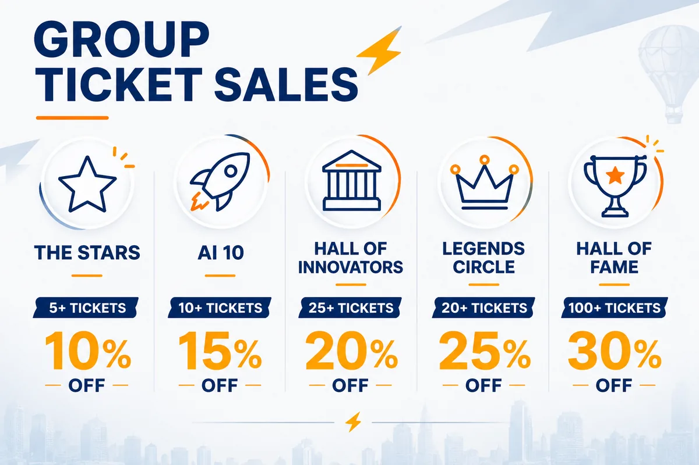
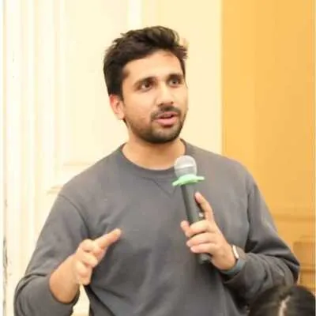
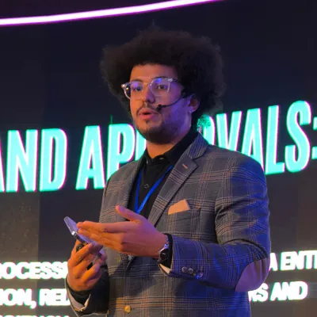
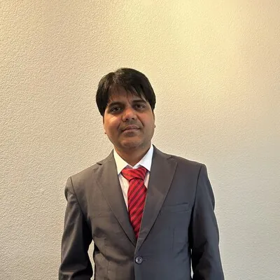
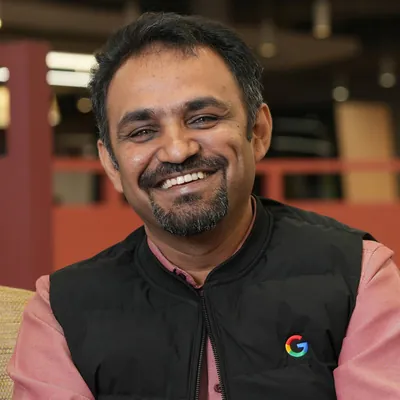
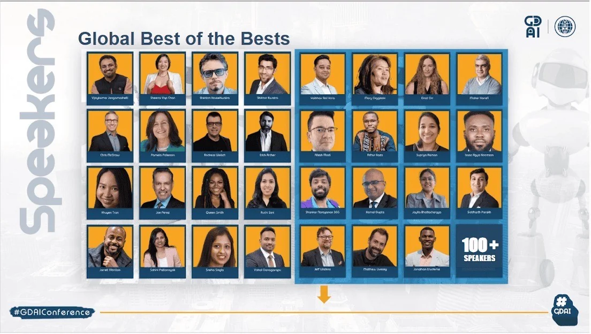

Follow AI Every Time & DataGlobal Hub on LinkedIn

The Global Data & AI Virtual Tech Conference 2026
(5,987+ RSVPs)
Join a global virtual conference experience featuring AI leaders, data experts, founders, researchers, creators, students, executives, hands-on sessions, AI-assisted networking, real-time translation, and a metaverse-ready conference environment.
November 20–22, 2026 • 100% Virtual • Presented by AI Every Time • Hosted by DataGlobal Hub
Tickets start from only $10.99. Secure your pass early and unlock the current Buy 1 Ticket, Get 1 Free offer.
Three days. Global experts. Practical AI insights. Networking. Workshops. Demos. Future-ready learning.
AI Every Time is waiving 100% of the ticket fee for selected qualified individuals. Check Your Eligibility
New for 2026
Experience GDAI 2026 in the Metaverse
This year, we are bringing the conference to a fully immersive metaverse experience. Every attendee will have their own avatar in a spatial campus designed for collaboration, networking, and learning.
Spatial Campus
Navigate a fully designed 3D virtual campus with personal avatar design
3D Collaborative Workspaces
Work together in immersive 3D environments built for real collaboration
AI-Assisted Networking
AI matches you to people, sessions, and opportunities based on your interests
Intelligent Agents
AI agents for learning and networking that guide your conference experience
Real-Time Translation
Break language barriers with instant translation across all languages
Fully Metaverse-Ready
A complete AI-driven immersive experience unlike any virtual conference before
From GDAI 2025
Watch Snippets from Last Year's Conference
Get a taste of what GDAI delivers. Preview sessions from 150+ world-class speakers at GDAI 2025. Limited to 10-minute previews per session.
Why This Event Matters Now
AI is no longer optional. It is actively changing careers, businesses, education, media, research, leadership, and society. The professionals, founders, students, and leaders who understand AI early will have an advantage in their industries, companies, and communities.
Stay Relevant
AI is reshaping every industry. Attending helps you stay informed, connected, and prepared for what comes next.
Connect Globally
Meet AI professionals, data leaders, founders, researchers, and innovators from around the world through AI-assisted networking.
Learn Practically
Gain practical AI insights, tools, frameworks, and strategies you can apply immediately in your career or business.
"AI is moving fast. The people who understand it early will have an advantage in their careers, companies, communities, and industries."
Who Should Attend
GDAI 2026 is designed for professionals and learners across every level and industry.
Data professionals
who want to stay ahead of AI-powered analytics
AI and ML professionals
who want to understand the next wave of models, tools, and applications
Founders and business leaders
who want to apply AI for growth, automation, and innovation
Students and early-career professionals
who want career advantage
Researchers and educators
who want to understand AI's impact on learning and society
Product leaders and engineers
who want practical AI strategy
Creators, journalists, and community builders
who want to understand AI-powered media and storytelling
Executives and decision-makers
who need governance, ROI, ethics, and enterprise AI strategy
What You Will Experience
GDAI 2026 is not just another virtual conference. It is an AI-native, metaverse-ready experience built for the next era of work, learning, and innovation.
- Keynotes from AI, data, and technology leaders
- Expert panels and fireside chats
- Hands-on workshops and masterclasses
- Startup demos and product showcases
- AI-assisted networking
- Real-time translation across languages
- A spatial/metaverse-ready conference experience
- 3D collaborative workspaces
- Intelligent agents for learning and networking
- VIP networking opportunities
- Practical insights you can apply immediately
Three Tracks Built for Your Goals
Choose the track that matches your interests, or attend sessions across all three.
AI & Data Innovations
For people who want to understand the latest breakthroughs in AI, LLMs, automation, generative AI, multimodality, and data-powered innovation.
Enterprise Data Strategy & Leadership
For leaders and professionals who care about AI governance, ROI, ethics, security, data monetization, and responsible AI adoption.
The Future of Work & AI in Society
For people who want to understand job disruption, AI regulation, creative industries, education, workforce change, and the social impact of AI.
A Small Investment for Massive Value
For less than the cost of many meals, you can access three days of AI insights, expert sessions, global networking, workshops, and future-focused learning from anywhere in the world.
Special Offer
Buy 1 Ticket, Get 1 Free
Bring a friend, colleague, teammate, student, founder, or community member with you. This offer is available for a limited time.
Secure your ticket early before the current offer changes.
Choose Your Pass
Every pass gives you access to all three days. Choose the level that matches your goals.
$10.99
Explorer Pass
Anyone who wants affordable access to the core live conference experience
Lowest entry price for a global AI conference
- 100+ live conference sessions
- Opening & closing keynotes
- Panel discussions
- AI Expo Hall & Startup Showcase
- Networking lounge
- Community discussions
- Prize giveaways
- All three days access
$99
Plus Pass
Professionals who want full access, recordings, and a certificate
30-day recordings let you revisit sessions at your own pace
- Everything in Explorer, plus:
- All 150+ live sessions
- 30-day session recordings
- Certificate of attendance
- Downloadable speaker slides
- AI-powered networking
- Full Prompt & Resource Library
- All three days access
$249
Professional Pass
Professionals and leaders who want long-term access and speaker interaction
One-year recordings + AI Learning Companion for continued growth
- Everything in Plus, plus:
- AI Learning Companion
- One-year session recordings
- Meet the Speakers (limited)
- Full resource access
- AI-powered smart matching
- All three days access
$499
VIP Pass
Leaders, executives, and founders who want premium networking and recognition
Exclusive executive roundtables and Balloon d'Or nomination
- Everything in Professional, plus:
- Meet the Speakers access
- VIP networking
- Priority Q&A
- Executive Roundtables (partial)
- Balloon d'Or Award nomination
- All three days access
Your pass gives you access to the virtual conference experience across November 20–22, 2026.
Bring Your Team to GDAI 2026
AI is not just changing individual careers. It is changing entire teams, companies, universities, and industries. Save with group ticket discounts for 5 to 100+ registrations.
- 10% Off·The Stars5+ registrations
THESTARS - 15% Off·AI 1010+ registrations
THEAI10 - 20% Off·Hall of Innovators25+ registrations
HALLOFINNOVATORS - 25% Off·Legends Circle50+ registrations
LEGENDSCIRCLE - 30% Off·Hall of Fame100+ registrations
HALLOFFAME

The GDAI Balloon d'Or Award
GDAI 2026 will spotlight outstanding leaders, builders, innovators, and contributors through the Balloon d'Or Award experience. This award celebrates excellence, leadership, innovation, and impact across the global AI, data, and technology community.
VIP Pass holders receive automatic nomination
Featured Speakers & Sessions
Meet the Speakers
World-class AI and data leaders from Google, Microsoft, Meta, Amazon, Apple, OpenAI, Netflix, Salesforce, Oracle, IBM, and more are presenting at GDAI 2026.
Aakash Abhay Yadav
Making Security Risk Intelligence Mainstream at Roblox | OWASP AI Exchange Author
Session
GRC-as-Code: How Security Teams Can Ship AI Governance Without Slowing Down Engineering
Abeer Shrivastava
Sr Manager & Principal of Data Engineering & BI at Tredence inc. and Member of Forbes Technology Council
Session
Beyond Dashboards: The Rise of Conversational and Autonomous Analytics
Abhijit Chanda
Director - MarTech Leader | Expert in Marketing Analytics & Customer Insights | GenAI Catalyst
Session
From Insights Agent to Executive Truth: Reinventing End-of-Campaign Intelligence in Retail Media
Ajitha Rathinam Buvanachandran
Principal Machine Learning Engineer at Fidelity Investments
Session
AI Archaeology: Transforming Retired Models into Strategic Intelligence

Akhil Sharma
SrSDE at Meta, ex-Google
Session
Beyond the Slot-Filler: Architecting Reasoning Loops for Agentic Assistants
Algernae King
Business Infrastructure & Financial Strategist | Bestselling Author | Certified AI Consultant
Session
Before the Bot: How AI-Driven Business Infrastructure Creates Fundable, Scalable Enterprises
Anant Somvanshi
Sr. Specialist, AI Defense and Oversight at The Vanguard Group
Session
Building Trust at Scale: Trusted AI Testing for Generative and Agentic AI Systems
Andy Bradley
Principal Business Consultant, Telefonica Tech
Session
Trust me, I'm artificial!
Ankur Gupta
LinkedIn, Senior Staff Technical Program Manager
Session
Why ML Deployments Fail in Production and How to Engineer Reliability at Scale
Anton An
Lead Frontend Developer at Hiveon
Session
Taming GenAI: Adapting Frontend Architecture for the New Era
Aquayemi-Claude Akinsanya
CEO & Founder, Community Lead at The ONE Campaign
Session
Real-Time Data: Building Scalable and Sustainable Solutions for Fast-Paced Environments
Ashima Chakravarty
Engineering Team Director at Blackrock
Session
Governing AI-Generated Code: Balancing Innovation, Risk, and Accountability
Ashish Garg
Walmart, Principal Product Manager
Session
Beyond AI Demos: Embedding GenAI Into Product Workflows That Matter
Ayoade Adegbite
Data Analytics Engineer, Bredge LLC
Session
Leveraging AI for Data-Driven Documentation: Capturing and Scaling Domain Knowledge
Bhargavi Vepuri
AI/ML Leader
Session
Designing a Controlled LLM-Based Framework for Secure and Deterministic Database Operations in Regulated Industries
Deep Patel
Senior Data Engineer at Robinhood
Session
Proving AI ROI in the Enterprise: Metrics That Survive the Boardroom
Devika Toprani
Founder, Somagraphic Learning™
Session
When AI Enters Matters: A Behavioral Case for Human-First Reasoning in the Age of Generative AI
Dr. Joe Perez
Award-winning International Keynote Speaker / Senior Systems Specialist / Fractional CTO / Amazon Best-Selling Author
Session
S.T.E.P. Up Your Leadership Strategy with Data-Driven Insights
Durga Krishnamoorthy
Forbes Technology Council Member, Senior Product Manager at Cognizant
Session
From Shopping Carts to Autonomous Agents: How Agentic AI is Rewriting Retail in 2026 and Beyond
Gbenga Akingbulere
Palo Alto Networks, Staff Software Engineer
Session
From Assistant to Operator: Security and Governance Risks in Multi-Agent AI Workflows
Harsh Ranjan
Senior Software Engineer at Snowflake
Session
Engineering Beyond the "Rule of Eight"
Hina Gandhi
Software Engineering Technical Leader at Cisco, IEEE Senior Member, ADPList Mentor, Keynote Speaker
Session
Teaching Spark to Tune Itself: Reinforcement Learning for Smarter Optimization
Hirenkumar Narendrabhai Dholariya
Sr Data Engineering Architect at Thermo Fisher Scientific
Session
AI Driven Enterprise Data Modernization Using Semantic Intelligence and Cloud AI Platforms
Isaac Agya Koomson
Kia-Start Up Consult - Founder and CEO
Session
Human Leadership in the Age of Intelligent Agents
Ishan Bhatt
AI Systems Engineer at Microsoft | Creator of Crucix and OpenMontage
Session
The Agent Harness Beyond Code: Agentic Patterns for use cases beyond coding
Kanish Manuja
Principal Software Engineer, Twilio
Session
Productionizing LLMs: Architecture, Tradeoffs, and Hard Lessons from the Trenches
Karunakar Kotha
Principal Database Solution Architect
Session
AI-Augmented Query Optimization: SQL Server 2025 Meets Fabric Self-Healing Data Platform
Knut Relbe-Moe
Modern Workplace Expert with focus on AI, SharePoint, Viva Engage and Intranets
Session
The AI in SharePoint (Knowledge Agent) is out, what does that mean for your org
Kunal Jain
Software Engineer 3 at Adobe | Data Platforms and Distributed Systems
Session
Data-Pipeline Evals for Reliable AI Systems
Lydia Ray
Databricks, Data & AI Technical Expert
Session
Both Sides of the Table: Leading AI Strategy While Still Getting Your Hands Dirty
Madhvi Sharma
Sr. Engineering Manager
Session
Revolutionizing Healthcare with AI
Maitrik Patel
Engineering and Product Leader | AI/ML, Web & Design
Session
Synthetic Lives for Smarter Agents: Generating Personal Context Data for AI Benchmark Design
Mark Francis
Founder/CEO - CaregiverZone, Inc.
Session
AI, Ambient Intelligence, and the Future of Senior Living

Mohamed Mortadha Manai
Senior AI Engineer | AI Expert | AI Engineer at Netflix | PHD candidate in xAI | International AI Speaker
Session
Building Agentic AI Workflows with xAI on Vertex AI: From Code to Action
Monisha Athi Premalatha
Lead Data & Analytics, Supply Chain, Microsoft
Session
Why Analytics Maturity, Not Just AI Tools, Will Define Agentic AI Adoption in 2026
Narendra Bhargav Boggarapu
Lead Software Engineer at Wells Fargo NA
Session
Secure RAG Architecture for Financial Institutions: Provenance and Policy Enforcement
Nikhil Kassetty
Software Engineer - AI and Technology Thought Leader
Session
The Next Workplace: AI Agents, Human Creativity, and Intelligent Collaboration
Nikita Kothari
SMTS, Salesforce
Session
MCPs, CLIs, and Skills: Choosing the Right Tooling Layer for Agentic Development
Nirmal Jingar
Technology Leader, Wayfair
Session
AI-Driven Autonomous Supply Chains: Replacing Human Planning Without Losing Control
Nishanth Sirikonda
Cloud Solutions Architect
Session
Generative AI in the Enterprise: From Hype to Measurable Value
Niyati P
Software Lead
Session
Production-Grade AI Infrastructure for Defense: Scaling Vision-Language Models Securely
Peraschi Selvan Subramanian
UT Austin
Session
Multimodal AI: Unifying Data for Context-Aware Intelligence
Pranjal Saxena
Principal Strategy, Strategy & Finance, Youtube, Google
Session
Reimagining Enterprise Go-to-Market in the Agentic Era
Preeta Pillai
BPUT University
Session
Revolutionizing Financial Services: The Impact of AI-Driven Data Pipelines
Priyan Pattnayak
Senior Principal Scientist - Oracle Cloud AI
Session
Beyond the AI Demo: How to Ship LLM Features That Actually Work in Production
Queen Smith
VP of Enterprise Agility and Data
Session
Letting Data Dream: Unlock Possibilities
Rama Krishna Raju Samantapudi
Sr. Staff AI/ML Architect at ServiceNow
Session
Agentic Governance: Securing Autonomous AI Systems at Enterprise Scale
Santhosh Anchoori
Senior Software Engineer, Chime Financials
Session
Designing Low-Latency Online Data Stores for AI-Driven Financial Services

Santosh Kumar
HCL America Inc. | Technical Leader - AI
Session
Generative AI for Scalable, Trustworthy Clinical Decision-Making
Shabir Mustehsan
Enterprise AI leader turning governance and strategy into real world execution at scale
Session
Building an ISO 42001 Compliant AI Center of Excellence in Big Tech
Sheena Yap Chan
Keynote Speaker and Wall Street Journal Bestselling Author on Confidence and Leadership
Session
Responsible by Design: Building Trustworthy AI from Data to Deployment
Shruti Dhumak
Head of Customer Engineering at Google Cloud
Session
Leading Through Change: Guiding Enterprises into the AI-Powered Cloud Era
Siddharth Jain
AI Engineering Manager, Finance AI at OpenAI
Session
Auditable AI Agents for Enterprise Finance
Stefan Maxones
Data Architect | AI Adoption Expert | Author & Lecturer | Vienna, Austria
Session
Why AI Projects Don't Fail Because of AI – The Uncomfortable Truth About Enterprise Data
Su Belagodu
Managing Partner, Intellectus Advisors
Session
Human-in-the-Loop AI: Leadership, Strategy, and Enterprise-Ready Decisioning
Sudhakar Reddipalli
Independent Researcher
Session
AI-Driven Industry 4.0 Transformation Through IoT, Cloud, and Intelligent Automation
Sumit Bhasin
UKG, Senior Staff Software Engineer
Session
Orchestrated AI Agents in Production: Build Self-Healing Platform Diagnostics
Supriya Raman
IBM watsonx Labs - AI Engineering Head
Session
Beyond the Chatbot: The Era of Agentic & Multimodal AI
Susmita Singh
Senior Software Engineer at Google
Session
Beyond the Prototype: Building Resilient, Non-Hallucinating AI Agents at scale
Swapna Chimanchodkar
IEEE Senior Member
Session
AI Driven Predictive Analytics for Early Sepsis Detection and Intervention
Tanmay Rauth
Senior Software Engineer at Apple
Session
When SELECT WHERE id = 42 SQL Statement Reads the Entire Lake: Building a Bloom Filter Optimizer
Tarini Prasad Samanta
Independent Researcher, USA
Session
Responsible Healthcare AI: Governance, Explainability, and Patient Safety
Tejas Patel
Senior Software Engineer at Amazon
Session
Beyond the Hype: Engineering Trustworthy AI Agents for the Real World
Tiankai Feng
Data & AI Leader, Author & Speaker
Session
Humanizing AI Strategy
Utpal Das
Senior IT Technical Lead, Knitwell Group, Columbus, OH, USA
Session
Building Trustworthy and Inclusive AI Systems: Lessons from a Real-World Multimodal AI Platform
Vamsi Pulusu
Technical Anchor at Ford Motor Company
Session
Modern Data Pipeline Architecture: From Traditional ETL to Cloud Native Streaming
Venkata Raghavendra Vaishnav Vinjamuri
Distinguish Engineer - Data Science at Verizon
Session
Human-AI Collaboration for FWA: Smarter Network Ops and Retention

Vijaykumar Jangamashetti
Googler, Trusted Advisor, Staff Cloud Technical Consulting Architect at Google
Session
The Agentic AI Revolution: Powered by Gemini on Google Cloud
Virender Bhargav
Machine Learning Engineer 4 | AI Agents, MCP, RAG & LLMs
Session
AI Co-pilots at Scale: Architecting a Multi-framework Agentic Platform
Suprajyotsna Dasari
Software Developer at Cognizant
Session
Automate Your Tasks by Building Agentic AI
Shikha Gupta
Staff Data Analyst at Intuit | Building AI agents for finance | Bridging Corp FP&A and AI engineering
Session
Building AI Agents That Corp Finance Actually Trust
Ravi Teja Pagidoju
Senior Software Engineer
Session
LLMs Meet Classical Algorithms: A Hybrid Approach for Large-Scale Optimization Problems
Sandeep Voona
Product Leader, ServiceNow | AI Visionary & Digital Transformation Expert
Session
From Legacy to Intelligence: How AI Is Rewriting Software for the Next Decade
Kushal Vishwakarma
AI & Data Engineering Specialist
Session
Using AI in the Data Engineering Field
Pavankumar Kodati
Independent Researcher
Session
LLM-Assisted Auto-Generation of Enterprise ETL Pipelines from Metadata and Business Rules
Gopinathan Thirugnanam
Independent Researcher
Session
Agentic AI for Autonomous Network Operations: Advancing CSP Autonomy
Tajah M. Gross, PhD
Founder, Ethilect
Session
Your AI Workflow Needs a Human Exit Ramp
Nagarjuna Gummadi
Wilmington University
Session
Building Cloud-Native AI Ready Financial Platforms with Security, Resilience, and Scalability
Menahil Tanveer
Senior Software Engineer | Led products from zero to production
Session
Guardrails Across the Stack: Directing AI Through a POS System I Didn't Build
Jai Chandra Mouli Langoju
Independent Speaker
Session
Specification-Anchored Detection of Design System Drift Using Vision and Multimodal LLMs
Chandrashekhar Medicherla
Lead Software Engineer at Salesforce | 18+ Years Fortune 500 Experience | AI Database Research Scholar
Session
Building AI-Ready Database Foundations for Enterprise LLMs
Chinazor Vivian Kalu
UK Black Tech Resident Technologist | AI Data Governance and Strategic Programme Management
Session
Build Once, Reuse Repeatedly: Turning Documents into AI-Powered Work Assets
Alexandra Hartman
Curiosity-Driven Leadership for an AI-Native World | Reimagining the future of change
Session
The Human Side of AI: Curiosity and Credibility in a World Moving Faster Than Understanding
Sri Charan Reddy Pennaka
Salesforce Business Analyst at Aurobindo Pharma Inc
Session
AI-Powered Governance: The Future of Salesforce Automation in Pharma
Saad Sheikh
Co-Founder and Chief Technologist, KDCAI
Session
Enterprise Architecture Patterns for Production-Grade AI Systems
Edwin Ochieng
Water Resources Engineer
Session
Modernizing Flood Risk Analysis with AI-Ready Hydrologic Data Pipelines
Hong Gui
Founder & Principal Consultant, Laurel Consulting | Data & AI Strategy
Session
Data Strategy for the AI Era: Embedding Authority into Execution
DR Gaurav Kumar Gupta
Principal Solution Architect at Allianz Technology
Session
Designing AI-Native Enterprises: The Next Evolution of Enterprise Architecture
Shishir Tewari
Senior Manager, Data Engineering | Procore Technologies
Session
Scalable Customer Lifecycle Intelligence: Operationalizing Hybrid MLOps at Scale
Mahipal Reddy Yalla
Software Solutions Architect
Session
SmartSAN AI: AI-Driven Intelligent Framework for Autonomous Zero-Downtime SAN Migrations
200+ more speakers & sessions across AI, Data, Cloud, Security, Leadership, and more
The full conference schedule features over 200 additional sessions from global experts across every major AI and data discipline.
Apply to Speak at GDAI 2026
Are you building, researching, leading, teaching, deploying, or shaping the future of AI and data? Apply to speak at GDAI 2026 and share your expertise with a global audience of professionals, executives, founders, students, researchers, and innovators.
Call closes November 20, 2026 at 11:59 PM EDT

Conference Agenda
Event Schedule
20-22 November 2026 (postponed from 22-24 August 2026)
Multiple sessions hold concurrently across 3 parallel tracks. Additional speakers and sessions will be updated as confirmations are received.
9:00 AM - 9:15 AM
Welcome & Opening Announcements
All Tracks
9:15 AM - 9:45 AM
Opening Keynote Address
All Tracks
9:45 AM - 10:15 AM
AI & Data Innovation
AI, Ambient Intelligence, and the Future of Senior Living
Mark Francis
Enterprise Strategy & Leadership
Before the Bot: How AI-Driven Business Infrastructure Creates Fundable, Scalable Enterprises
Algernae King
Future of Work & AI in Society
When AI Enters Matters: A Behavioral Case for Human-First Reasoning
Devika Toprani
Applied AI & Engineering
AI-Augmented Query Optimization: SQL Server 2025 Meets Fabric Self-Healing Data Platform
Shankar Narayanan SGS
10:15 AM - 10:45 AM
AI & Data Innovation
Beyond Single Agents: Multi-Agent AI in Software Testing
Him Raj Singh
Enterprise Strategy & Leadership
Designing AI Experiences Customers Actually Trust
Ajitha Koduri
Future of Work & AI in Society
Teaching Spark to Tune Itself: Reinforcement Learning for Smarter Optimization
Hina Gandhi
Applied AI & Engineering
Designing Low-Latency Online Data Stores for AI-Driven Financial Services
Santhosh Anchoori
10:45 AM - 11:15 AM
AI & Data Innovation
Beyond the Slot-Filler: Architecting Reasoning Loops for Agentic Assistants
Akhil Sharma
Enterprise Strategy & Leadership
Auditable AI Agents for Enterprise Finance
Siddharth Jain
Future of Work & AI in Society
Responsible Healthcare AI: Governance, Explainability, and Patient Safety
Tarina Samanta
Applied AI & Engineering
Humanizing AI Strategy
Tiankai Feng
11:15 AM - 11:45 AM
AI & Data Innovation
Beyond the Prototype: Building Resilient, Non-Hallucinating AI Agents at Scale
Susmita Singh
Enterprise Strategy & Leadership
From Assistant to Operator: Security and Governance Risks in Multi-Agent AI Workflows
Gbenga Akingbulere
Future of Work & AI in Society
Assembling Your A-Team: Hiring the Right Talent in the Age of AI
Kolby Goodman
Applied AI & Engineering
AI Driven Enterprise Data Modernization Using Semantic Intelligence and Cloud AI Platforms
Hirenkumar Dholariya
11:45 AM - 12:15 PM
Virtual Networking / Coffee Break
Break
12:15 PM - 12:45 PM
AI & Data Innovation
Letting Data Dream: Unlock Possibilities
Queen Smith
Enterprise Strategy & Leadership
Enterprise Data Strategy: Building a Data-Driven Culture
Amit Upadhyay
Future of Work & AI in Society
Give Work to AI: How Agentic AI Powered the Humanless Swiss AI Chatbot Factory
Nick Gushchin
Applied AI & Engineering
AI-Powered ERP: Boosting Supply Chain Productivity and Cutting Costs at Scale
Abhijit Joshi
12:45 PM - 1:15 PM
AI & Data Innovation
Responsible by Design: Building Trustworthy AI from Data to Deployment
Sheena Yap Chan
Enterprise Strategy & Leadership
Scaling Knowledge Management with AI: From Enterprise Data Chaos to Intelligent Systems
Aakash Chaudhary
Future of Work & AI in Society
From Prompts to Processes: Building Autonomous AI Workflows
Mihaela-Roxana Ghidersa
Applied AI & Engineering
Do AI Agents Know When to Stop? Fixing Over-Tooling and Under-Tooling in Production LLM Systems
Bhavuk Jain
1:15 PM - 1:45 PM
AI & Data Innovation
Modern Data Infrastructure Starts with Cloud Data Quality
Rajesh Kumar Kanji
Enterprise Strategy & Leadership
AI Governance at Scale: Building Trust Frameworks for Autonomous Enterprise AI
Harshit Kohli
Future of Work & AI in Society
FinVerBench: Why LLMs Over-Flag Clean Financial Statements
Silu Panda
Applied AI & Engineering
Orchestrating AI Agents for Real-Time Customer Interactions
Madhavi Bonthu
1:45 PM - 2:15 PM
AI & Data Innovation
Why ML Deployments Fail in Production and How to Engineer Reliability at Scale
Ankur Gupta
Enterprise Strategy & Leadership
GRC-as-Code: Security Teams Can Ship AI Governance Without Slowing Engineering
Aakash Abhay
Future of Work & AI in Society
Governed Memory Planes for Cloud AI Agents
Naveen Kumar Vedurupaka
Applied AI & Engineering
Why Analytics Maturity, Not Just AI Tools, Will Define Agentic AI Adoption in 2026
Arun Pratap Singh
2:15 PM - 2:45 PM
Fireside Chat with Industry Leaders
All Tracks
2:45 PM - 3:15 PM
AI & Data Innovation
Leading Through Change: Guiding Enterprises into the AI-Powered Cloud Era
Shruti Dhumak
Enterprise Strategy & Leadership
Proving AI ROI in the Enterprise: Metrics That Survive the Boardroom
Deep Patel
Future of Work & AI in Society
Using Agentic AI and LangChain for Patent Law Datasets
Thomas Plunkett
Applied AI & Engineering
Why Analytics Maturity, Not Just AI Tools, Will Define Agentic AI Adoption in 2026
Monisha Athi Premalatha
3:15 PM - 3:45 PM
AI & Data Innovation
Designing a Controlled LLM-Based Framework for Secure Database Operations
Bhargavi Vepuri
Enterprise Strategy & Leadership
Human-in-the-Loop AI: Leadership, Strategy, and Enterprise-Ready Decisioning
Su Belagodu
Future of Work & AI in Society
From Single GPU to Production Clusters: Building Distributed AI Systems
Henry Fuheng Wu
Applied AI & Engineering
Beyond the Chatbot: The Era of Agentic and Multimodal AI
Supriya Raman
3:45 PM - 4:15 PM
AI & Data Innovation
Synthetic Lives for Smarter Agents: Generating Personal Context Data for AI Benchmark Design
Maitrik Patel
Enterprise Strategy & Leadership
Data Security in the Age of Autonomous AI: Strategies for Cybersecurity
Khadija Assbai
Future of Work & AI in Society
The SCALER Framework: Closed-Loop Credential Governance for 1,000+ Database Accounts
Mayank Sethi
Applied AI & Engineering
Iceberg for Agents: Turning Lakehouse Data Into AI-Ready Context
Andrew Madson
4:15 PM - 4:45 PM
AI & Data Innovation
AI-Augmented Query Optimization: SQL Server 2025 Meets Fabric Self-Healing Data Platform
Karunakar Kotha
Enterprise Strategy & Leadership
Designing AI Agents Users Will Trust: Evals, Guardrails, and Feedback Loops
Cansu Berkem
Future of Work & AI in Society
Hardware Roots of Trust for Secure AI and Data Platforms
Madhav Narayan Talapady
Applied AI & Engineering
Architecting Agentic Systems: Design Patterns for Production AI Agents
Maulik Bhatt
4:45 PM - 5:15 PM
Virtual Networking / Coffee Break
Break
5:15 PM - 5:45 PM
Closing Keynote
All Tracks
5:45 PM - 6:00 PM
Closing Remarks - End of Day 1
All Tracks
9:00 AM - 9:15 AM
Welcome & Announcements
All Tracks
9:15 AM - 9:45 AM
Opening Keynote Address
All Tracks
9:45 AM - 10:15 AM
AI & Data Innovation
Real-Time Data: Building Scalable and Sustainable Solutions
Aquayemi-Claude Akinsanya
Enterprise Strategy & Leadership
Both Sides of the Table: Leading AI Strategy While Getting Your Hands Dirty
Lydia Ray
Future of Work & AI in Society
AI-Native Storytelling: Generative Tools Can Democratize Creativity
Hogan Shrum
Applied AI & Engineering
Explainable AI in Practice: From Model Output to Real-World Decisions
Harshal Goswam
10:15 AM - 10:45 AM
AI & Data Innovation
AI Co-pilots at Scale: Architecting a Multi-framework Agentic Platform
Virender Bhargav
Enterprise Strategy & Leadership
Beyond AI Demos: Embedding GenAI Into Product Workflows That Matter
Ashish Garg
Future of Work & AI in Society
Your AI Knows Who's About to Quit. Should You Tell HR?
Gulce Guleli
Applied AI & Engineering
Data Observability Meets AI: Ensuring Trustworthy Intelligence at Scale
Rajesh Sura
10:45 AM - 11:15 AM
AI & Data Innovation
From Insights Agent to Executive Truth: Reinventing End-of-Campaign Intelligence
Abhijit Chanda
Enterprise Strategy & Leadership
From Models to Systems: How to Productionise Generative AI Across AWS and Azure
Raj Shekhar
Future of Work & AI in Society
Who's Accountable When the Agent Acts? Governing Autonomous AI at Work
Kevin Barona
Applied AI & Engineering
The Agentic AI Revolution: Powered by Gemini on Google Cloud
Vijaykumar Jangamashetti
11:15 AM - 11:45 AM
AI & Data Innovation
Building Agentic AI Workflows with xAI on Vertex AI: From Code to Action
Mohamed Mortadha Manai
Enterprise Strategy & Leadership
Inclusive by Design: How Fintech and AI Are Powering Community-Driven Finance
Nikhil Kassetty
Future of Work & AI in Society
What Does 'AI-First' Even Mean and Why Does Half Your Team Resist It?
Kateryna Motko
Applied AI & Engineering
Agentic Evaluation and Improvements on Freshness Quality in Large-Scale LLM RAG Systems
Susie Liu
11:45 AM - 12:15 PM
Virtual Networking / Coffee Break
Break
12:15 PM - 12:45 PM
AI & Data Innovation
From Shopping Carts to Autonomous Agents: How Agentic AI is Rewriting Retail
Durga Krishnamoorthy
Enterprise Strategy & Leadership
AI-Powered Digital Twins and Multi-Agent Intelligence for Enterprise Operations
Thiyagarajan Palaniyappan
Future of Work & AI in Society
The Missing API Behind Great Tech Leadership
Amit Grinvald
Applied AI & Engineering
Generative AI for Scalable, Trustworthy Clinical Decision-Making
Santosh Kumar
12:45 PM - 1:15 PM
AI & Data Innovation
Multi-Agent Preventive Maintenance Diagnostics to Enhance Labor Productivity
Utkarsh Tripathi
Enterprise Strategy & Leadership
Secure RAG Architecture for Financial Institutions: Provenance and Policy Enforcement
Narendra Bhargav Boggarapu
Future of Work & AI in Society
Quantum Machine Learning for AI-Driven Credit Risk Analytics
Bhaskara Reddy Udaru
Applied AI & Engineering
AI-Driven Autonomous Supply Chains: Replacing Human Planning Without Losing Control
Nirmal Jingar
1:15 PM - 1:45 PM
AI & Data Innovation
Streamlining AI Native Product Evals: LLM as Judge, Human in the Loop
Anil Pantangi
Enterprise Strategy & Leadership
The Agent Harness Beyond Code: Agentic Patterns for Use Cases Beyond Coding
Ishan Bhatt
Future of Work & AI in Society
AI-Driven 5G Infrastructure Automation for Intelligent Data Ecosystems
Anil Kumar Thimmapuram
Applied AI & Engineering
Storytelling Is Becoming a Leadership Skill Again
Barbara Adwalpalker
1:45 PM - 2:15 PM
AI & Data Innovation
The Rise of Vibe-Coding: Empowering the Next Wave of Makers
Omar Soussa
Enterprise Strategy & Leadership
Reimagining Enterprise Go-to-Market in the Agentic Era
Pranjal Saxena
Future of Work & AI in Society
GenAI-Driven Digital Transformation with Dynamic Models
Saurabh Garg
Applied AI & Engineering
Orchestrated AI Agents in Production: Build Self-Healing Platform Diagnostics
Sumit Bhasin
2:15 PM - 2:45 PM
Fireside Chat with Industry Leaders
All Tracks
2:45 PM - 3:15 PM
AI & Data Innovation
Governing AI-Generated Code: Balancing Innovation, Risk, and Accountability
Ashima Chakravarty
Enterprise Strategy & Leadership
AI FinOps: Making Production LLMs Affordable Without Cutting Quality
Anwar Khan
Future of Work & AI in Society
AI Won't Replace Creators, It Will Replace Creative Limitations
Dann Paniccia
Applied AI & Engineering
MCPs, CLIs, and Skills: Choosing the Right Tooling Layer for Agentic Development
Nikita Kothari
3:15 PM - 3:45 PM
AI & Data Innovation
Productionizing LLMs: Architecture, Tradeoffs, and Hard Lessons from the Trenches
Kanish Manuja
Enterprise Strategy & Leadership
Ethics in the Agentic Loop: A Practical Guide to Responsible AI Agent Lifecycle
Vidura Wijekoon
Future of Work & AI in Society
From Copilot to Co-worker: Building an AI Agent Strategy That Survives
Shankar Krishnan
Applied AI & Engineering
When SELECT WHERE id = 42 Reads the Entire Lake: Building a Bloom Filter Optimizer
Tanmay Rauth
3:45 PM - 4:15 PM
AI & Data Innovation
Beyond the AI Demo: How to Ship LLM Features That Actually Work in Production
Priyan Pattnayak
Enterprise Strategy & Leadership
Agentic RAG Tester: Generating Ranked Test Cases from Features and Prod Events
Akshay Aggarwal
Future of Work & AI in Society
RAG in Production: Everything That Breaks After the Pilot
Kishore Arul
Applied AI & Engineering
Building Trust at Scale: Trusted AI Testing for Generative and Agentic AI Systems
Anant Somvanshi
4:15 PM - 4:45 PM
AI & Data Innovation
AI Archaeology: Transforming Retired Models into Strategic Intelligence
Ajitha Rathinam Buvanachandran
Enterprise Strategy & Leadership
Beyond Dashboards: The Rise of Conversational and Autonomous Analytics
Abeer Shrivastava
Future of Work & AI in Society
Data-Pipeline Evals for Reliable AI Systems
Kunal Jain
Applied AI & Engineering
Beyond the Hype: Engineering Trustworthy AI Agents for the Real World
Tejas Patel
4:45 PM - 5:15 PM
Virtual Networking / Coffee Break
Break
5:15 PM - 5:45 PM
Closing Keynote
All Tracks
5:45 PM - 6:00 PM
Closing Remarks - End of Day 2
All Tracks
9:00 AM - 9:15 AM
Welcome & Announcements
All Tracks
9:15 AM - 9:45 AM
Opening Keynote Address
All Tracks
9:45 AM - 10:15 AM
AI & Data Innovation
Context Engineering: The Missing Layer Between AI Hype and Data Agents
David Effiong
Enterprise Strategy & Leadership
Build Your First Agent in Copilot Studio
Elayne Jones
Future of Work & AI in Society
AI-Driven Industry 4.0 Transformation Through IoT, Cloud, and Intelligent Automation
Sudhakar Reddipalli
Applied AI & Engineering
AI Driven Predictive Analytics for Early Sepsis Detection and Intervention
Swapna Chimanchodkar
10:15 AM - 10:45 AM
AI & Data Innovation
S.T.E.P. Up Your Leadership Strategy with Data-Driven Insights
Dr. Joe Perez
Enterprise Strategy & Leadership
Revolutionizing Financial Services: AI-Driven Data Pipelines
Preeta Pillai
Future of Work & AI in Society
The Human Side of AI: Curiosity and Credibility in a World Moving Faster
Alexandra Hartman
Applied AI & Engineering
Integrating Healthcare Guidelines with Governed GenAI
Anjan Chatterjee
10:45 AM - 11:15 AM
AI & Data Innovation
Revolutionizing Healthcare with AI
Madhvi Sharma
Enterprise Strategy & Leadership
Designing Governed AI-Ready Platforms for the Enterprise
Nishanth Sirikonda
Future of Work & AI in Society
Build Once, Reuse Repeatedly: Turning Documents into AI-Powered Work Assets
Chinazor Vivian Kalu
Applied AI & Engineering
From Reactive to Predictive: Using Amazon Q and Generative AI to Transform Enterprise Cloud Support
Mayuri Dekate
11:15 AM - 11:45 AM
AI & Data Innovation
SmartSAN AI: AI-Driven Intelligent Framework for Autonomous Zero-Downtime SAN Migrations
Mahipal Reddy Yalla
Enterprise Strategy & Leadership
Turning Data into Intelligent Systems
Shishir Tewari
Future of Work & AI in Society
Your AI Workflow Needs a Human Exit Ramp
Dr. Tajah M. Gross
Applied AI & Engineering
From Manual to Automated: Building a Real-Time AI-Driven Creative Enrichment Pipeline at Scale
Aneri Shah
11:45 AM - 12:15 PM
Virtual Networking / Coffee Break
Break
12:15 PM - 12:45 PM
AI & Data Innovation
Designing AI-Native Enterprises: The Next Evolution of Enterprise Architecture
Dr. Gaurav Kumar Gupta
Enterprise Strategy & Leadership
Data Strategy for the AI Era: Embedding Authority into Execution
Dr. Hong Gui
Future of Work & AI in Society
Modernizing Flood Risk Analysis with AI-Ready Hydrologic Data Pipelines
Edwin Ochieng
Applied AI & Engineering
Building Agent Harnesses to Match Frontier-Model Performance in RAG
Vineeth Kalluru
12:45 PM - 1:15 PM
AI & Data Innovation
Enterprise Architecture Patterns for Production-Grade AI Systems
Saad Sheikh
Enterprise Strategy & Leadership
AI-Powered Governance: The Future of Salesforce Automation in Pharma
Sri Charan Reddy Pennaka
Future of Work & AI in Society
Guardrails Across the Stack: Directing AI Through a POS System
Menahil Tanveer
Applied AI & Engineering
The Analytics Engineer in the Era of AI Agents
Fabiyi Opeyemi
1:15 PM - 1:45 PM
AI & Data Innovation
Building Cloud-Native AI Ready Financial Platforms with Security and Resilience
Nagarjuna Gummadi
Enterprise Strategy & Leadership
Specification-Anchored Detection of Design System Drift Using Vision and Multimodal LLMs
Jai Chandra Mouli Langoju
Future of Work & AI in Society
Agentic AI for Autonomous Network Operations: Advancing CSP Autonomy
Gopinathan Thirugnanam
Applied AI & Engineering
RAG Under Attack: Securing Enterprise AI Against Prompt Injection and Data Leakage
Bhargavi Kalicheti
1:45 PM - 2:15 PM
AI & Data Innovation
LLM-Assisted Auto-Generation of Enterprise ETL Pipelines from Metadata
Pavan Kumar Kodati
Enterprise Strategy & Leadership
Transforming Modern Data Engineering with Generative AI in Databricks
Kushal Vishwakarma
Future of Work & AI in Society
From Legacy to Intelligence: How AI Is Rewriting Software for the Next Decade
Sandeep Voona
Applied AI & Engineering
Production-Grade AI Infrastructure for Defense: Scaling Vision-Language Models Securely
Niyati P
2:15 PM - 2:45 PM
Fireside Chat with Industry Leaders
All Tracks
2:45 PM - 3:15 PM
AI & Data Innovation
LLMs Meet Classical Algorithms: A Hybrid Approach for Large-Scale Optimization
Ravi Teja Pagidoju
Enterprise Strategy & Leadership
Building AI Agents That Corp Finance Actually Trust
Shikha Gupta
Future of Work & AI in Society
Automate Your Tasks by Building Agentic AI
Suprajyotsna Dasari
Applied AI & Engineering
Human-AI Collaboration for FWA: Smarter Network Ops and Retention
Venkata Raghavendra Vaishnav Vinjamuri
3:15 PM - 3:45 PM
AI & Data Innovation
Mastering Multi-Cloud ERP Integration: Data Normalization and Synchronization
Srinivasan Pakkirisamy
Enterprise Strategy & Leadership
Building an ISO 42001 Compliant AI Center of Excellence in Big Tech
Shabir Mustehsan
Future of Work & AI in Society
Agentic Governance: Securing Autonomous AI Systems at Enterprise Scale
Rama Krishna Raju Samantapudi
Applied AI & Engineering
Leveraging AI for Data-Driven Documentation: Capturing and Scaling Domain Knowledge
Ayoade Adegbite
3:45 PM - 4:15 PM
AI & Data Innovation
Building AI-Ready Database Foundations for Enterprise LLMs
Chandrashekhar Rao
Enterprise Strategy & Leadership
AI-Driven Cloud Defense: Fortifying National Infrastructure Against Cyber Threats
TBC
Future of Work & AI in Society
Accessible and Inclusive AI Systems: Lessons from a Real-World Multimodal AI Platform
Vinod Ramachandran
Applied AI & Engineering
The AI in SharePoint Knowledge Agent Is Out: What Does That Mean for Your Organization?
Knut Relbe-Moe
4:15 PM - 4:45 PM
AI & Data Innovation
From Code to Strategy
Manushi Sheth
Enterprise Strategy & Leadership
Designing AI-Native Enterprises: The Next Evolution
TBC
Future of Work & AI in Society
The Human Side of AI: Leading with Curiosity and Credibility
TBC
Applied AI & Engineering
Engineering Beyond the Rule of Eight
Harsh Ranjan
Innovation & Research
Multimodal AI: Unifying Data for Context-Aware Intelligence
Selvan Subramanian
Leadership & Culture
Building Trustworthy and Inclusive AI Systems: Lessons from a Real-World Multimodal AI Platform
Utpal Das
AI & Data Innovation
The Human Side of AI: Curiosity and Credibility in a World Moving Faster Than Understanding
Alexandra Allie Hartman
Enterprise Strategy & Leadership
What Does AI-First Even Mean and Why Does Half Your Team Resist It?
Kateryna Kate Motko
Future of Work & AI in Society
Human Leadership in the Age of Intelligent Agents
Isaac Agya Koomson
4:45 PM - 5:15 PM
Virtual Networking / Coffee Break
Break
5:15 PM - 5:45 PM
Closing Keynote
All Tracks
5:45 PM - 6:00 PM
Closing Remarks - End of Conference
All Tracks
Multiple sessions hold concurrently. Choose one track per time slot.
Global Data & AI Virtual Tech Conference 2026 Media
Partner With an Award-Winning Global AI & Data Conference
GDAI 2026 offers sponsors and partners the opportunity to connect with a global audience of AI professionals, data leaders, business executives, founders, students, researchers, creators, and technology decision-makers.
Frequently Asked Questions
GDAI 2026 is an award-winning virtual conference presented by AI Every Time. The event brings together global AI and data leaders, professionals, business executives, founders, researchers, students, and innovators to explore AI, data, and the future of innovation in the metaverse.
The conference takes place November 20–22, 2026.
Yes. GDAI 2026 is a virtual conference designed as an AI-native, metaverse-ready experience. Attendees can join from anywhere in the world.
The conference is designed for data professionals, AI professionals, business leaders, executives, founders, students, researchers, creators, product leaders, engineers, educators, investors, and anyone interested in the future of AI and data.
The three main tracks are AI & Data Innovations, Enterprise Data Strategy & Leadership, and The Future of Work & AI in Society.
The Explorer Pass includes access to 100+ live sessions, keynotes, panels, AI Expo Hall, Startup Showcase, sponsor booths, networking lounge, community discussions, product demonstrations, partial prompt and resource libraries, and prize giveaways.
The Plus Pass includes 30-day session recordings. The Professional Pass includes one-year session recordings. The VIP Pass includes lifetime session recordings.
The Plus Pass and above include a certificate of attendance.
The current ticket offer gives you Buy 1 Ticket, Get 1 Free, so you can bring a friend, teammate, colleague, student, founder, or community member with you. This offer is available for a limited time.
Tickets are currently listed as non-refundable, non-cancellable, and non-transferable after purchase.
Yes. Group ticket discounts are available for 5+ registrations (10% off), 10+ (15% off), 25+ (20% off), 50+ (25% off), and 100+ registrations (30% off).
GDAI 2026 is designed as an AI-native, metaverse-ready experience with a spatial campus, personal avatar design, 3D collaborative workspaces, AI-assisted networking, intelligent agents, real-time translation, and immersive virtual engagement.
Be Part of the Global AI & Data Experience
GDAI 2026 is where the global AI and data community comes together to learn, connect, build, and prepare for the future. You will get three days of AI and data insights, expert sessions, practical learning, global networking, and access to an AI-native virtual conference experience.
Tickets start from $10.99. The current Buy 1 Ticket, Get 1 Free offer gives you even more value today.
The best next step is to secure your ticket now.
Secure your ticket early before the current offer changes.
Event Support
For any questions about conference passes, speaking opportunities, partnerships, sponsorships, volunteering, sessions, and general event support reach out to Sara
+1 (520) 214-7713Contact Sara